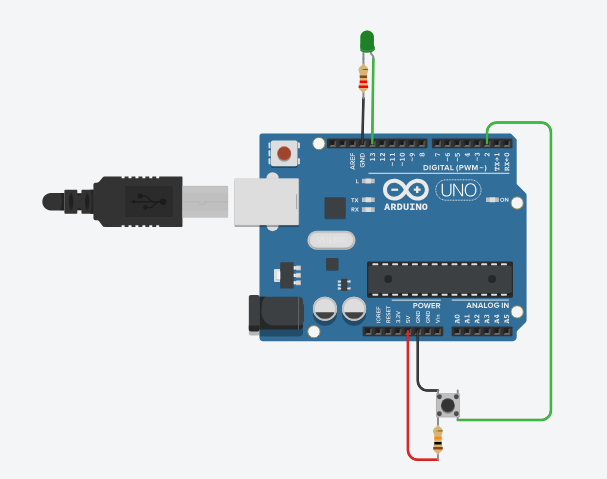

Jogo de Reação com Botões

Objetivo
Criar um jogo simples que testa o tempo de reação do jogador, acendendo um LED aleatoriamente e medindo quanto tempo o jogador leva para pressionar um botão em resposta.
Materiais Necessários
- Arduino Uno (ou similar) - 1 unidade
- LED - 1 unidade
- Botão - 1 unidade
- Resistor 220Ω (para o LED) - 1 unidade
- Resistor 10kΩ (para o botão) - 1 unidade
- Jumpers - Alguns
- Protoboard - 1 unidade
- Cabo USB - 1 unidade
Passo a Passo da Montagem
Esquema das ligações:
LED:
- Anodo (perna maior) do LED → Pino digital 13 do Arduino
- Cátodo (perna menor) do LED → GND através de um resistor de 220Ω
Botão:
- Um lado do botão → Pino digital 2 do Arduino
- Mesmo lado do botão → Resistor de 10kΩ conectado ao 5V (pull-up)
- Outro lado do botão → GND
Código
const int ledPin = 13; // Pino do LED
const int buttonPin = 2; // Pino do botão
const int minDelay = 2000; // Tempo mínimo de espera (2 segundos)
const int maxDelay = 7000; // Tempo máximo de espera (7 segundos)
int buttonState = HIGH; // Estado atual do botão (HIGH = não pressionado com pull-up)
int gameState = 0; // Estado do jogo (0 = esperando início, 1 = esperando LED, 2 = esperando botão)
unsigned long startTime; // Tempo de início para medir a reação
unsigned long reactionTime; // Tempo de reação do jogador
void setup() {
pinMode(ledPin, OUTPUT);
pinMode(buttonPin, INPUT_PULLUP); // Usando resistor pull-up interno
Serial.begin(9600);
Serial.println("Jogo de Reação com Arduino");
Serial.println("---------------------------");
Serial.println("Pressione o botão para iniciar o jogo!");
}
void loop() {
// Lê o estado do botão (LOW = pressionado com pull-up)
buttonState = digitalRead(buttonPin);
// Estado 0: Esperando o jogador iniciar o jogo
if (gameState == 0) {
if (buttonState == LOW) {
Serial.println("Jogo iniciado! Fique atento ao LED...");
delay(1000); // Pequena pausa após iniciar
gameState = 1;
// Espera um tempo aleatório antes de acender o LED
int randomDelay = random(minDelay, maxDelay);
delay(randomDelay);
// Acende o LED e registra o tempo
digitalWrite(ledPin, HIGH);
startTime = millis();
gameState = 2;
Serial.println("LED aceso! Pressione o botão o mais rápido possível!");
}
}
// Estado 2: LED aceso, esperando o jogador pressionar o botão
else if (gameState == 2) {
if (buttonState == LOW) {
// Jogador pressionou o botão, calcular tempo de reação
reactionTime = millis() - startTime;
digitalWrite(ledPin, LOW);
// Exibe o resultado
Serial.print("Seu tempo de reação foi: ");
Serial.print(reactionTime);
Serial.println(" milissegundos");
// Avalia o desempenho
if (reactionTime < 200) {
Serial.println("Incrível! Você tem reflexos super-rápidos!");
} else if (reactionTime < 300) {
Serial.println("Excelente! Reflexos muito bons!");
} else if (reactionTime < 500) {
Serial.println("Bom trabalho! Reflexos na média.");
} else {
Serial.println("Continue praticando para melhorar seus reflexos!");
}
// Reinicia o jogo
Serial.println("---------------------------");
Serial.println("Pressione o botão para jogar novamente!");
gameState = 0;
delay(1000); // Evita múltiplos pressionamentos acidentais
}
}
}
Explicação do Funcionamento
Este projeto cria um jogo simples para testar o tempo de reação:
- O jogador pressiona o botão para iniciar o jogo.
- Após um tempo aleatório (entre 2 e 7 segundos), o LED acende.
- O jogador deve pressionar o botão o mais rápido possível quando ver o LED acender.
- O Arduino calcula e exibe o tempo de reação em milissegundos.
- O jogo avalia o desempenho do jogador com base no tempo de reação.
- O jogador pode jogar novamente pressionando o botão.
Estados do jogo:
- Estado 0: Esperando o jogador iniciar o jogo
- Estado 1: Tempo de espera aleatório (não visível no código como estado separado)
- Estado 2: LED aceso, esperando o jogador pressionar o botão
Vídeo Demonstrativo
Dicas e Variações
Considerações importantes para este projeto:
- Você pode adicionar mais LEDs e botões para criar um jogo multiplayer, onde os jogadores competem para ver quem tem o tempo de reação mais rápido.
- Experimente adicionar um buzzer para emitir sons diferentes com base no tempo de reação.
- Para tornar o jogo mais desafiador, você pode adicionar LEDs de diferentes cores e fazer com que o jogador só pressione o botão quando uma cor específica acender.
- Você pode armazenar e exibir o melhor tempo de reação alcançado durante a sessão de jogo.
- Para uma versão mais avançada, adicione um display LCD para mostrar instruções e resultados sem precisar do monitor serial.